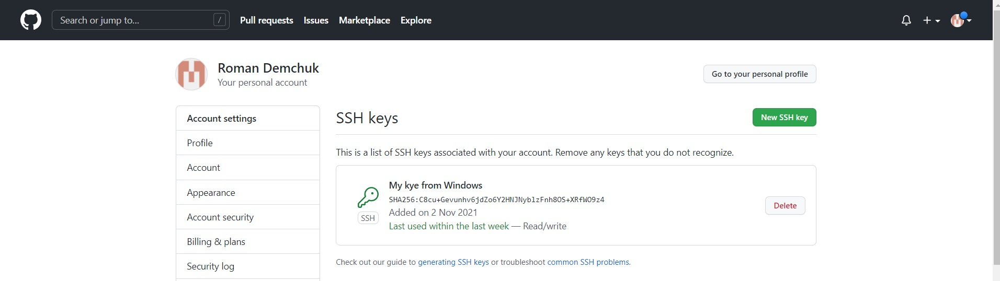

Овновні команди, що використовуються в Git:
- git config --global user.name Roman Demchuk
- git config --global user.email 4mmmcd@gmail.com
- git init - ініціює пустий репозиторій в поточній директорії. Так само можна вказати будь-який шлях.
- git status - відображає стан робочого каталогу та розділу проіндексованих файлів. З її допомогою
можна перевірити індексацію змін та побачити файли, які не відстежуються Git.
- git add - додаємо файли в коміт. Зазвичай використовується «.» або «*» для додавання усіх файлів.
Щоб додати один файл – вказуємо його ім'я та розширення.
- git commit - за допомогою цієї команди ми виконуємо «коміт» змін. Тобто, вказуємо, що поточний
зліпок проекту потрібно зберегти. Можна вказати без аргументу -m, в такому випадку відкриється текстовий
редактор по замовчуванню, в якому потрібно буде описати коміт. Якщо це сталось випадково, вводите :q і
натискаєте Enter
- git log - відображає журнали фіксації
- git checkout - команда git checkout дозволяє переміщатися між гілками, створеними командою git
branch. При перемиканні гілки відбувається оновлення файлів у робочому каталозі відповідно до версії, що
зберігається в цій гілці, а Git починає записувати нові комміти в цій гілці.
- git branch - це команда для керування гілками в репозиторії Git.
- git push - Пушим» або відправляємо в репозиторій наші зміпки проекту. origin – назва віддаленого
репозиторію (зазвичай вибирають origin, але в теорії може бути будь-яке слово) master – назва гілки в яку
додаємо зміни (master – головна гілка у репозиторії, може бути будь-якою)
- git pull - команда для отримання змін з репозиторію.
- git merge - використовується для злиття однієї або декількох гілок у поточну.
- git clone - Клонуйте сховище в новий каталог
Що ж таке .gitignore файл
.gitignore файл - потрібен для приховування файлів та папок від системи контролю версій Git.
Домашнє завдання "Advanced":
- git revert - поверніть деякі існуючі коміти
- git reset - використовується для скасування локальних змін у репозиторії Git
- git rebase - повторно застосуйте комміти поверх іншої базової підказки
- git cherry-pick - означає вибрати коміт з однієї гілки та застосувати його до іншої
- git stash - дозволяє на якийсь час «здати в архів» (або відкласти) зміни, зроблені в робочій копії, щоб ви могли застосувати їх пізніше.
My SSH keys
